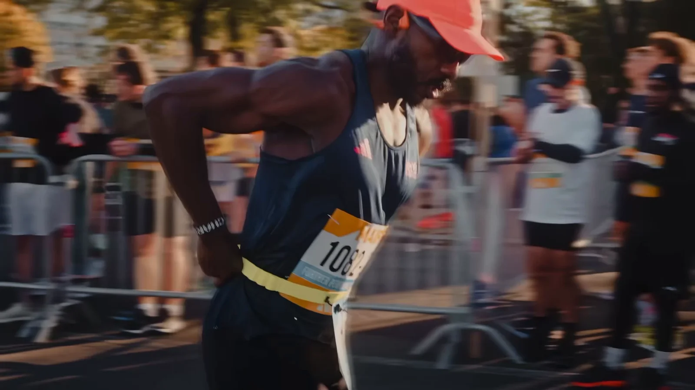

Des histoires en mouvement
Films de marque, documentaires et photographie éditoriale. Je poursuis la lumière, les gestes, et ce qui se passe juste avant.
Je filme et je photographie ce qui ne tient pas en place : une ville qui déborde, un visage qui se livre, la seconde exacte où la lumière bascule.
Peu de moyens, beaucoup d’attention. Des images qui respirent, un rythme qui se ressent avant de se comprendre.
Explorer la sélectionProjets sélectionnés
Ékiden
38 secondes dans la course. Un souffle, un tambour, la ville qui défile — et l’arrivée sous la Tour Eiffel.
Fragments
de lumière
Quatre séries, quatre climats. La ville dense, le désert silencieux, l’eau qui brûle à la fin du jour. Cliquez pour ouvrir l’image.
Une image,
une intention.
Film de marque
Des films courts, sensibles et efficaces, pensés pour raconter une marque sans la réciter.
02Documentaire
Le temps long, les voix, le réel. Une écriture d’images au plus près du terrain.
03Photographie
Portraits, séries éditoriales et campagnes. La même exigence de lumière, sans le mouvement.
04Direction artistique
Un regard global sur l’image : casting, lieux, palette, typographie, diffusion.

Sur le tournage d’ÉkidenParis, 2025
Derrière TCG,
un seul regard.
Celui d’un vidéaste et photographe basé à Paris, qui passe autant de temps à attendre la lumière qu’à courir après elle. Depuis six ans, je fabrique des images pour des marques, des médias et des projets qui ont quelque chose à dire.
La méthode ne change pas : écouter, observer, puis cadrer. Du documentaire au film de marque, je cherche la même chose — un rythme juste, une émotion qui ne s’explique pas.
de terrain
livrés
traversés
« TCG a cette rare capacité à disparaître derrière l’instant. Le résultat est juste, sensible, et terriblement efficace. »
Un projet en tête ?
Parlons-en.
Réseaux
Studio
Paris, France
Sur demande, partout ailleurs.
Heure locale
--:-- — Paris
Lun — Ven, 9 h / 19 h